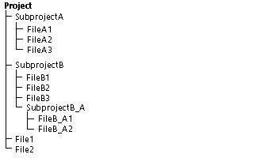

A project is a set of interrelated files that you store in Serena ChangeMan Version Manager; it is the entity that Version Manager uses to organize your files. Within a project, you can have subprojects and files, as shown in the following figure.
A Version Manager project is similar to a file system directory and its subdirectories. Like a directory, a project is a set of files that you create and maintain. Also, like a directory, a project is hierarchical, meaning subprojects can exist under projects and subprojects under other subprojects. However, projects are not exactly like directories. Unlike a folder, a Version Manager project stores changes to files in archives--directories do not store old versions of files.
All Version Manager projects are contained within a Version Manager project database.
| Creating Projects | About Logging In to Project Databases or Projects |
| Viewing Changes to Projects (change.log) |